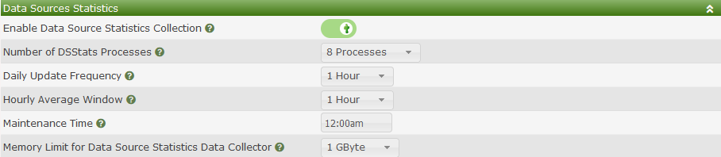
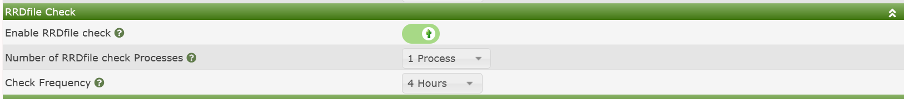
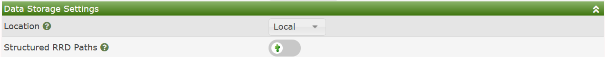
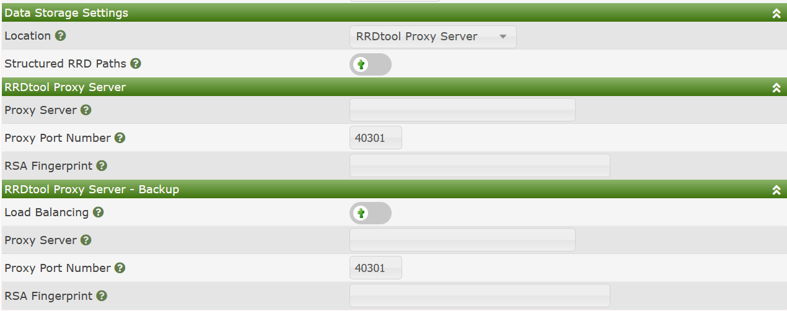

The Cacti Data settings includes settings for gathering statistical data about Cacti's Data Sources and about settings around how Cacti stores it's Round Robin Archives Time Series Databases (TSDB), otherwise known as RRDfiles.
There are presently to sub-sections for these settings.
Cacti has the ability to store peak and average data for all your Data Sources. You can then use that data to easily build dashboards using third party plugins including plugins like Superlinks from Howard Jones.
Below you will find an image of the default settings.

Those settings include:
Enable Data Source Statistics Collection - This is setting will either enable or disable the statistics collection.
Number of DSStats Processes - For very large Cacti installs the Data Source Statistics can take quite a long time to complete. This setting allows Cacti to perform the statistics calculation at orders of magnitude faster. You can allocate as many as 20 concurrent processes to perform all the updates.
Daily Update Frequency - This setting determines how often daily averages and peaks should be calculated. You can set it to run hourly, upto every 6 hours, or after Cacti's boost process completes.
Hourly Average Window - This is a floating time window where Cacti holds onto all samples for determining the hourly averages for your Data Sources. You have to watch this cache as by default it's stored in a memory table. You can run out of space.
Maintenance Time - This is the time in the day that Cacti will calculate Monthly and Yearly numbers and perform table maintenance.
Memory Limit for Data Source Statistics Data Collector - This setting controls the peak memory that the statistics poller will be allowed to use. Most systems can work fine using the default 1GByte setting.

RRDfile checker scans RRDfiles and try to find problems like stale values.
Those settings include:
Enable RRDfile Checker - This setting will either enable or disable the RRD checker.
Number of RRDfile Checker Processes - For very large Cacti installs the RRDfile Checker can take quite a long time to complete. This setting allows Cacti to perform the checks at orders of magnitude faster.
Check Frequency - This setting determines how often checks should be executed. You can set it to run hourly, upto 24 hours, or after Cacti's boost process completes.
These settings determine how you store your RRDfiles. This sub-section has two layouts as showing in the images below.

The settings above include:
Location - Either Local or RRDtool Proxy Server. The example above shows the local storage option.
Structured RRD Paths - In very large systems having a flat directory structure has severe performance consequences. However, with the Structured Paths option, Cacti will separate RRDfiles by Device ID and use the Data Source ID as the RRDfile name.
NOTE: If you are migrating from non-structured to structured paths setup, you must run the CLI script to move those files per the updated specification right after making this change.
The RRD Proxy settings below are more involved.
NOTE: It should be noted that although the RRD Proxy is in production at large commercial sites, it continues to not support replication. The author claims that it's 95% complete, but to date, has not completed the last 5%.

The settings above include:
Proxy Server - The IP or DNS name of the primary RRDfile proxy server.
Proxy Port Number - The port number to connect to in order to communicate with the RRD Proxy.
RSA Fingerprint - The fingerprint of the current public RSA key the proxy is using. This is required to establish a trusted connection to the RRD Proxy service.
WARNING: None of the settings below are implemented.
Load Balancing - Whether calls to the RRD Proxy should be load balanced.
Proxy Server - The secondary Proxy server IP or DNS name.
Proxy Port Number - The port number on the secondary RRD Proxy to talk to.
RSA Fingerprint - The fingerprint of the current public RSA key the proxy is using. This is required to establish a trusted connection to the RRD Proxy service.
Copyright (c) 2004-2024 The Cacti Group